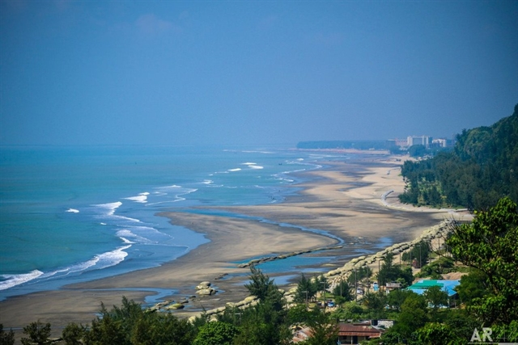

It was my first visit to the Cox's Bazaar i was so excited and it was not holidays so i have had the best view of the sea. As all the other points were crowded we choose Laboni Point to spend our time. The sea was calm and we stayed more than 3 hours there. The view of that place will make you spell bound. We had enjoyed sunset from the sea and it was the best part of my journey. One incident happened there in the beach, me and my sister forgot the location of our chair were we kept our shoes and left that place bare footed. Me with my sister after one hour or two went to that place again and found our shoes at the same place we left! No one touched them or any other thing never went lost if someone left anything. There were many kids in the beach but no one begs rather they sell something to everyone, This was impressive. I loved that place and want to visit their soon with my...
